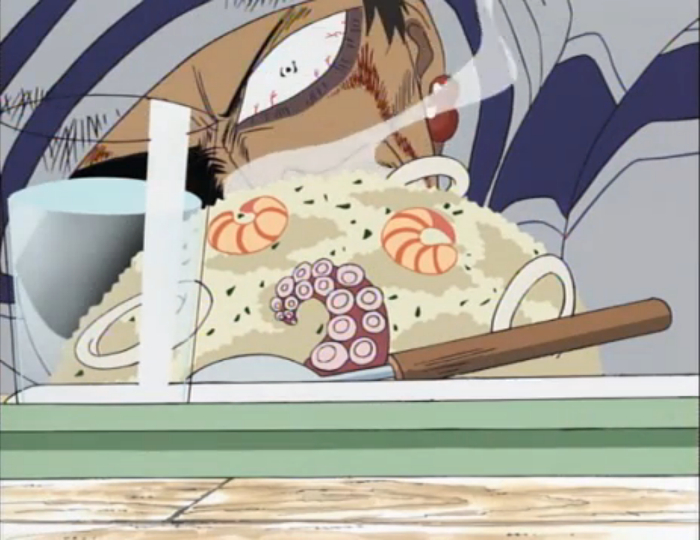

Gin's Fried Rice

Description
Upon his introduction, Sanji feed the wild pirate, Gin
a bowl after the pirate was on the verge of starving
to death. The plate is fried rice with corned beef dish
that can be cooked in a single frying pan.
Ingredients
- Rice
- Eggs
- Corned Beef
- 1/4 of an onion
- Brown Mushrooms
- Salad Oil
- Salt
- Black Pepper
- Japanese Shouyu
- Spring Onion
Steps
- Finely chop the onion, remove the mushroom's stalk,
and cut mushroom into thin slices. Cut a little of
the spring onion into small pieces. Then beat the eggs.
- Fry the mushrooms, the corned beef and half of the
onions.(Do not add salad oil)
- Move the ingredients in the last step to edge of the
pan and add the salad oil. Then pour the beaten eggs
and fry. Quickly add the rice and mix it in before
eggs harden.
- Sprinkle the salt and pepper over the rice, and add
the remaining onions. Pour the Shouyu evenly into the
pan, mix everything together well. Serve on a dish and
garnish with green onions.